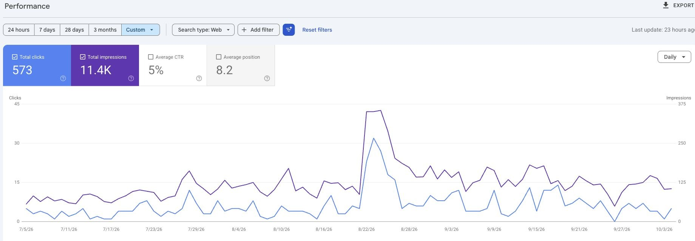
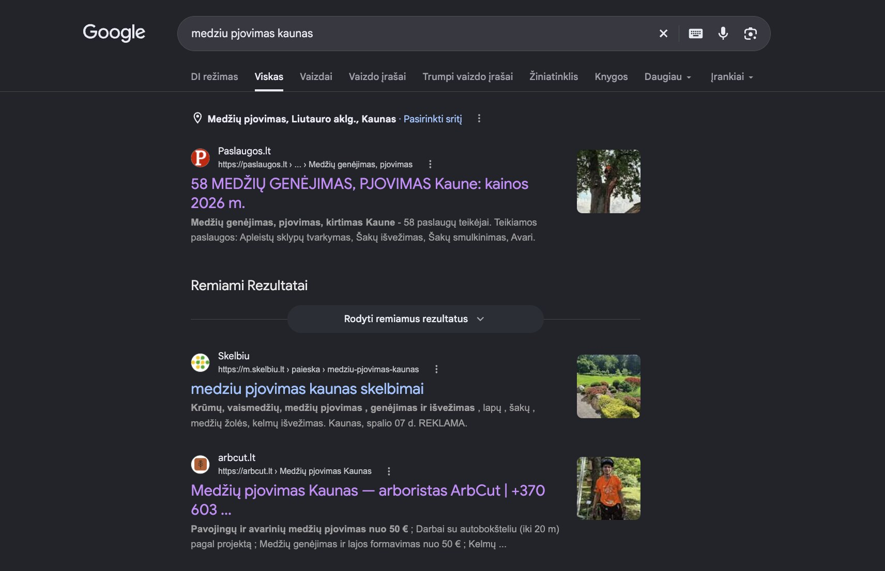
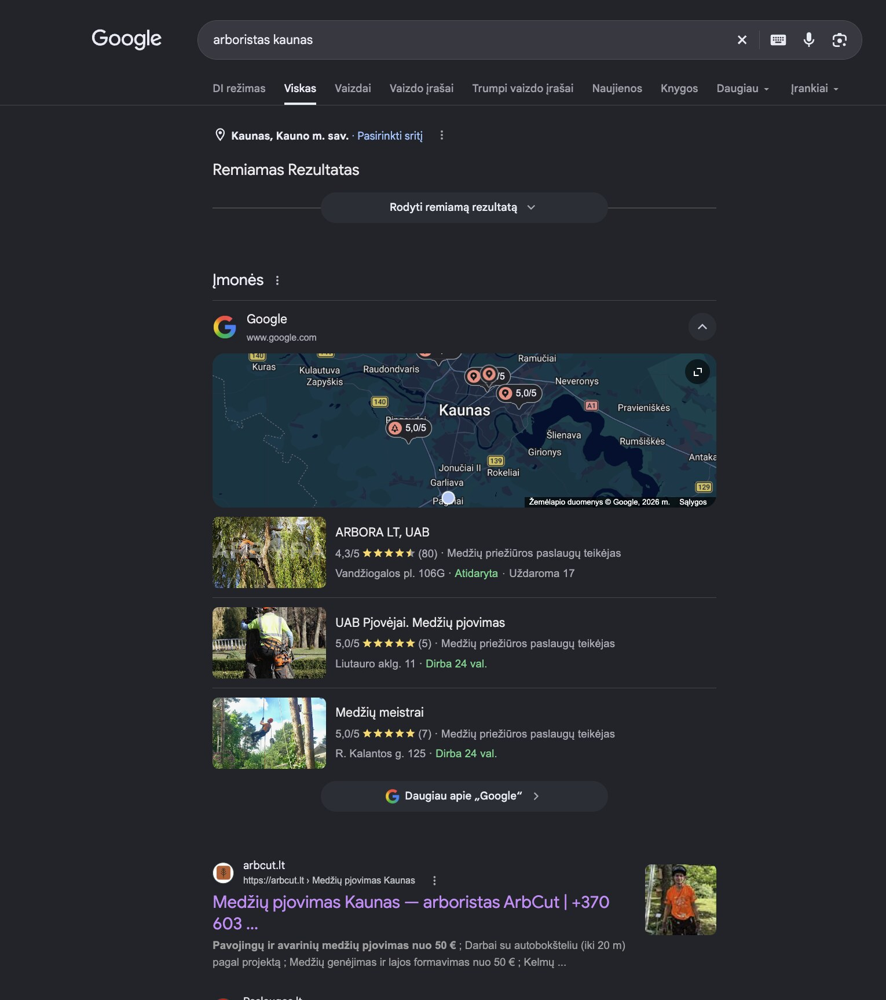
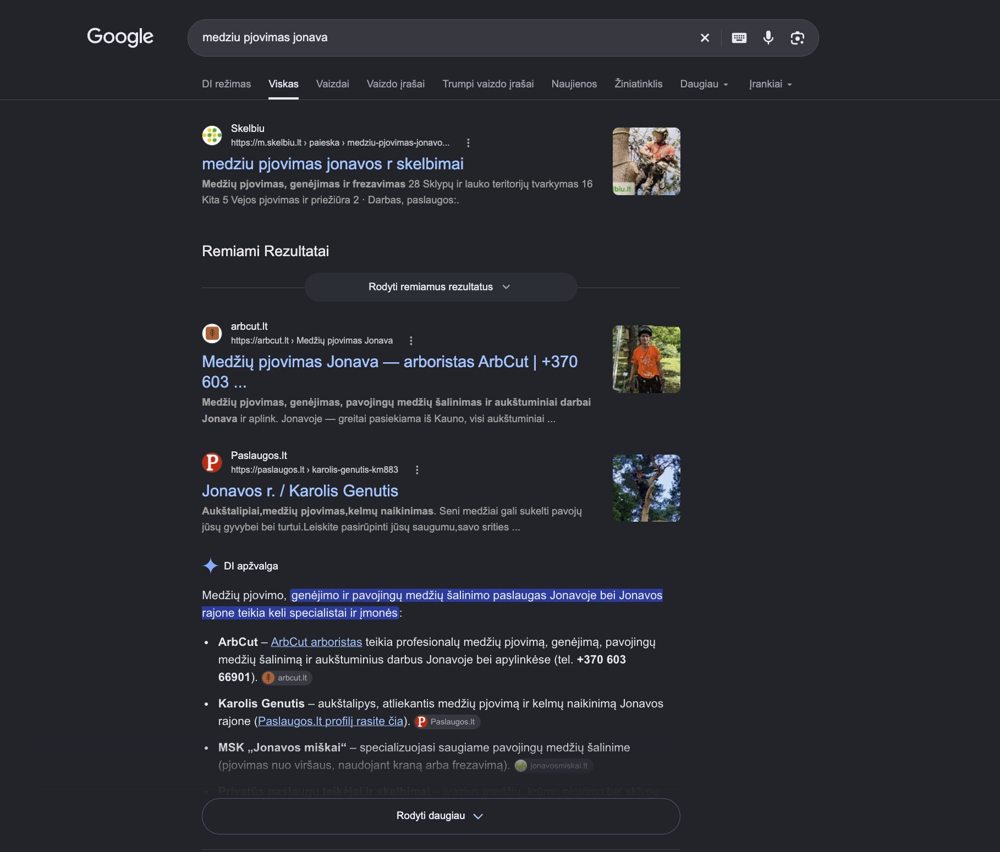
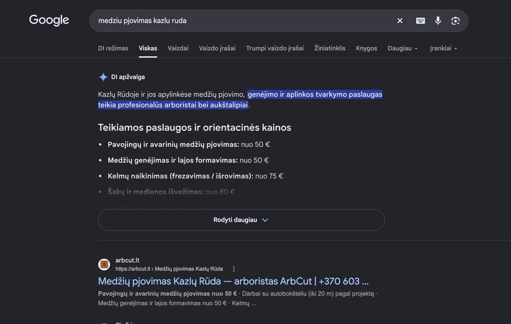

arbcut.lt rezultatai
Arboristo Manto Gerulio svetainė arbcut.lt, sukurta Mato Bašinsko. Visi vaizdai – originalios ekrano kopijos iš sistemų, be perpiešimo. Web3Forms ir Search Console ekrano kopijos išsaugotos 2026-10-09, Google paieškų – 2026-10-12.
20 formos užklausų per rugpjūtį ir rugsėjį
Rugpjūtis – 7, rugsėjis – 13. Web3Forms – sistema, per kurią veikia arbcut.lt užklausos forma.

Web3Forms, 2026 m. rugpjūtis: 7 užklausos.

Web3Forms, 2026 m. rugsėjis: 13 užklausų.
Tai formos užklausos, ne visos tapo užsakymais.
573 paspaudimai iš Google paieškos
11,4 tūkst. parodymų Google paieškoje. Laikotarpis 2026-07-05 – 2026-10-04. Google Search Console, arbcut.lt, Web paieška.

Google Search Console, 2026-07-05 – 2026-10-04.
Paspaudimai nėra užklausos.
arbcut.lt Google paieškoje

Paieška „medziu pjovimas kaunas“. Ekrano kopija išsaugota 2026-10-12.

Paieška „arboristas kaunas“: arbcut.lt pirmas po Google žemėlapio. Ekrano kopija išsaugota 2026-10-12.

Paieška „medziu pjovimas jonava“: arbcut.lt rezultatuose ir DI apžvalgoje. Ekrano kopija išsaugota 2026-10-12.

Paieška „medziu pjovimas kazlu ruda“: arbcut.lt pirmas po DI apžvalgos. Ekrano kopija išsaugota 2026-10-12.
Google rezultatai priklauso nuo vietos ir laiko. Tai vieno kliento rezultatas, ne garantija.
Matas Bašinskas · Individuali veikla · +370 676 99395 · jarviswork.co@gmail.com · jarvisweb.lt